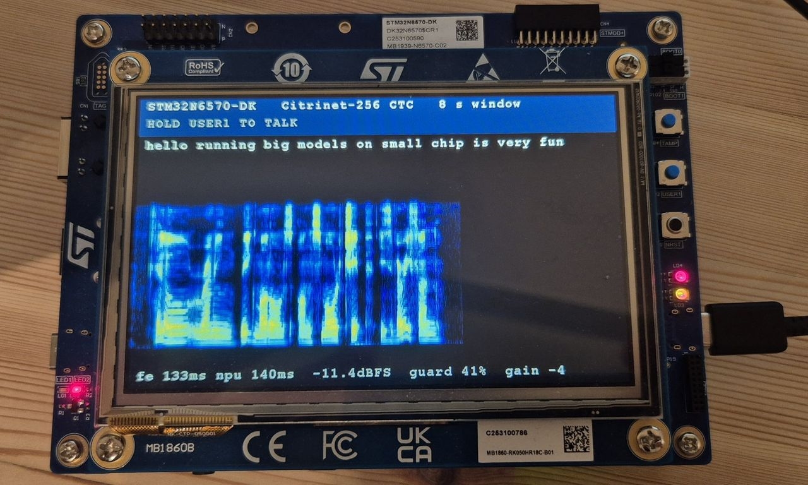

Featured · On-device speech recognition
stm32n6-stt
A push-to-talk speech captioner that runs entirely on an STM32N6570-DK: log-mel features on the Cortex-M55, a Citrinet-256 CTC encoder on the Neural-ART NPU, and the transcript on the LCD.
- encoder on the NPU
- 124 ms
- of audio per window
- 8 s
- WER cost of int8
- +0.5 pt